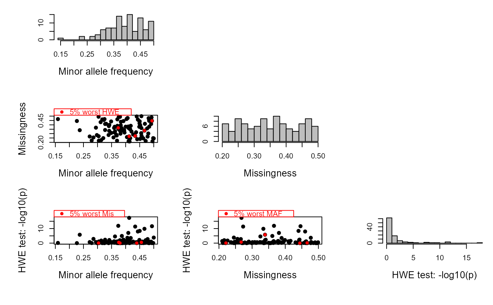

SnpStats.RdEstimate allele frequency (AF), missingness and Mendelian errors per SNP.
SnpStats(GenoM, Pedigree = NULL, ErrFlavour = "version2.0", Plot = TRUE)
| GenoM | genotype matrix, in sequoia's format: 1 column per SNP, 1 row per individual, genotypes coded as 0/1/2/-9, and rownames giving individual IDs. |
|---|---|
| Pedigree | dataframe with 3 columns: ID - parent1 - parent2. Additional columns and non-genotyped individuals are ignored. Used to estimate the error rate. |
| ErrFlavour | function that takes the genotyping error rate |
| Plot | show histograms of the results? |
A matrix with a number of rows equal to the number of SNPs (=number of columns of GenoM), and when no Pedigree is provided 2 columns:
Allele frequency of the 'second allele' (the one for which the homozygote is coded 2)
Proportion of missing calls
Number of dams, sires, parent-pairs succesfully genotyped for the SNP
Count of number of opposing homozygous cases
Count of Mendelian errors, includes opposing homozygous cases
Error rate, as estimated from the joined offspring-parent
(-parent) genotypes and the presumed error structure (ErrFlavour)
Calculation of these summary statistics can be done in PLINK, and SNPs with low minor allele frequency or high missingness should be filtered out prior to pedigree reconstruction. This function is provided as an aid to inspect the relationship between AF, missingness and genotyping error to find a suitable combination of SNP filtering thresholds to use.
For pedigree reconstruction, SNPs with zero or one copies of the alternate allele in the dataset (MAF \(\le 1/2N\)) are considered fixed, and excluded.
The error rate is estimated from the number of opposing homozygous cases (OH, parent is AA and offspring is aa) Mendelian errors (ME, e.g. parents AA and aa, but offspring not Aa) in parent-parent-offspring trios, and OH cases for offspring with a single genotyped parent.
The estimated error rates will not be as accurate as from duplicate samples. A single error in an individual with many offspring will be counted as many times, potentially resulting in non-sensical values of 'Err.hat' close to 1. On the other hand, errors in individuals without parents or offspring will not be counted at all. Moreover, a high error rate may interfere with pedigree reconstruction, and successful assignment will be biased towards parents with lower error count. Nonetheless, it may provide a ballpark estimate for the average error rate, which can be useful for subsequent (rerun of) pedigree reconstruction.
GenoConvert to convert from various data formats;
CheckGeno to check the data is in valid format for sequoia
and exclude monomorphic SNPs etc., CalcOHLLR to calculate OH
& ME per individual.
# \donttest{ data(Ped_HSg5) Genotypes <- SimGeno(Ped_HSg5, nSnp=400, CallRate = runif(400, 0.2, 0.8), SnpError = 0.05) SNPstats <- SnpStats(Genotypes, Pedigree=Ped_HSg5)# }